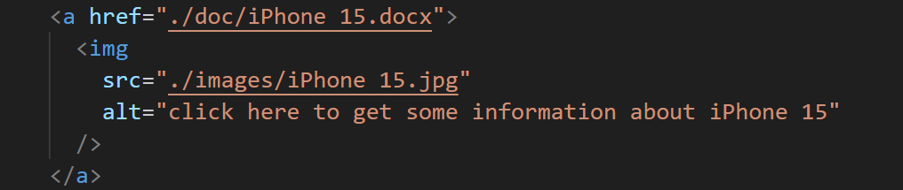
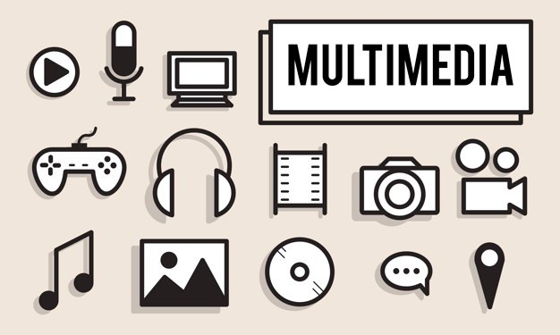

What is Hyperlink?
In this section I will explain hyperlinks' definition and their types.
Definition
In computing, a hyperlink, or simply a link, is a digital reference to data that the user can follow or be guided to by clicking or tapping. [1] A hyperlink points to a whole document or to a specific element within a document. A user can easily follow, jump to, and be directed to the destination by either clicking, tapping on, or hovering over the link.
A hyperlink can be a piece of text, an image, an icon, or a graphic that, when you click on it, points to and navigates you to a different webpage or document. It can also point to a specific section or element within the same webpage or document. The linked text is known as “anchor text“.
Basically, hyperlinks are clickable pointers to a resource.[2] For instance, hyperlink is a hyperlink, which will direct you to the Wikipedia of “hyperlink”. And the document who contains hyperlinks is source document, while the hyperlink leads you to target document.
Types of hyperlinks
Internal Hyperlinks
An internal hyperlink links two pages inside the same website. For example, history of hyperlink is an internal hyperlink which leads you to the next page of this website.
External Hyperlink
An external hyperlink links one website to another website. For example, HTML Links is an external hyperlink which leads you from this website to w3school website.
Besides internal hyperlink and external hyperlink, you can categorize hyperlinks by their forms
Text Hyperlink
The hyperlink is embedded into a word or phrase which makes it clickable. The examples above are text links.
Image Hyperlink
The hyperlink is embedded into a image which makes it clickable. For instance, click this picture of Vision Pro, you will be led to a txt file introducing Vision Pro which is copied from Wikipedia.
Anchor Hyperlink
Anchor hyperlinks bring user from one place in a website to another place, just like the example shown in “internal link”.
Fat Hyperlink
A fat hyperlink leads to multiple destinations.
How do hyperlinks work?
In this section I will explain how are hyperlinks implemented in web developers' perspectives and browsers perspectives.
How do developers create an HTML hyperlink?
Example 1: Text link
This is a basic syntax of HTML link.
The a defines a hyperlink, href stands
for hypertext reference, followed by “./images/iPhone 15.jpg” ,
which is the location of the target document, “iPhone 15” is the
hypertext.
Usually the hypertext is inside a paragraph, so you should put the
a element inside a paragraph like this.
This is a demo of how it works.
Example 2: Image link
To create an image link, you should add the image inside anchor element
In this case, click the image and then you will get the iPhone15.doc document.
Example 3: target attribute
In the examples above, when you click the link, the browser will
open the same tab. That's browser's default way to open a link.
What should you do if you want to make the link opened in a new
tab? You need to specify the target attribute.
target has 4 values:
- _self: This is default one. When you click the link, the link will be opened in the same tab.
- _blank: When you click the link, the link will be opened in a new tab.
- _top: Opens the document in the full body of the window
- _parent: Opens the document in the parent frame
How are HTML links implemented in browsers?
To explain how hyperlinks are implemented in browsers, I will break it down into step-by-step progress.
Step 1: Parsing the anchor tag
When you click the link, the browser encounters the anchor tag with the href attribute and parse it.
Then there are two different conditions. If the link refers to a local file, it does not need to send an HTML request. For example,
In this case, the browser constructs the local file path based on the specified path(./images/iPhone 15.jpg) in the href attribute, and then access it through user's local filesystem, and then render it.
However, if the link refers to a document on Internet, it needs to send an HTML request and the steps are as follows:
The step 2-6 shown on the overview picture will be described in more details later. Before we started, we should have some prerequisite knowledge about the html link. Take the webpage w3schools HTML introduction
as example. We can break the link down into several components:
- (1) Protocol: https://
-
The protocol indicates the method used for accessing the resource on the web. In this case, it's HTTPS (Hypertext Transfer Protocol Secure), which is the secure version of HTTP. HTTPS encrypts the data exchanged between the user's browser and the website, providing a secure connection.
- (2) Domain/Subdomain: www.w3schools.com
-
This part of the URL identifies the domain name of the website. In this case, it's w3schools.com. The .com is TLD ( top-level domain) refers to commercial organizations.
- (3) Path: /html/html_intro.asp
-
The path specifies the location of the specific resource (in this case, a web page) on the server's filesystem. In this URL, the path is /html/html_intro.asp. It indicates that the server should look for a file named "html_intro.asp" within a directory named html.
Step 2: Browser looks up IP address for the domain
After you clicked the html link, the browser needs to look for which server on the internet to connect to. To achieve this, it needs to look up the IP address of the server hosting the website using the domain you typed in. It does this using a DNS lookup[4]. The DNS look up is like looking up phone number in your contact app, the IP address is the phone number, the domain name is the contact's name, and the DNS (domain name system) is the contact app which records the contacts' names and their numbers.
To reduce latency, the browser will check cache(memory) first. If the browser can't find IP address on cache, then DNS lookup begins. The steps are shown in the picture below.
Step 3: Browser initiates TCP connection with the server
After the browser get the IP address of the server, it starts to establish TCP connection as shown below.
Step 4: Browser sends the HTTP request to the server.
Once the TCP connection is established, the browser has connected to the server, and it follows the rules of communication for HTTP(s) protocol. It begins with the browser sending an HTTP request to the server to request the contents of the page. The HTTP request contains 3 components: request line, headers and body
Request Line
The request line specifies the http method (get in the example), path to the requested resource(URL). There are several types of method as the table shown below.
| HTML request methods | Descriptions |
|---|---|
| GET | Requests a representation of the specified resource. GET requests should only retrieve data and not modify anything on the server. |
| POST | Submits data to be processed by the server. It's often used for form submissions and can modify data on the server. |
| PUT | Updates a resource on the server with the provided data. |
| DELETE | Deletes the specified resource on the server. |
| HEAD | Similar to GET but only requests the headers of the response, not the body. |
| OPTIONS | Retrieves the communication options available for the target resource. |
| PATCH | Applies partial modifications to a resource. |
Request Headers
The headers pass extra information along from the client that help route the request, indicate what type of client is making the request (the user agent), path, accept-encoding (supported encoding methods), cookies, etc.

Request Body
The request body is usually empty for a GET request like the example. For a request that handles resources, like POST, PUT or PATCH, the body will contain the data from the client to create or update.
XMLHttpRequest
Nowadays, modern browsers use XMLHttpRequest to interact with servers. You can retrieve data from a URL without having to do a full page refresh. This enables a Web page to update just part of a page without disrupting what the user is doing. It allows client to script data transfers via JavaScript. Here are some examples for you.
GET request
GET is an method used to retrieve data from a
server. The first line requests data from the w3schools link. The
third parameter to openis whether the request should
be asynchronous. true means JavaScript code will
continue to execute while waiting for the server's response. This
is generally preferred to avoid blocking the browser's UI.
send() is the method sends the related request to
server.
POST request
A POST request is used to create or alter data on the server.
In this example, POST request sends the data
"name=Thomas&age=31" to the server.
PUT request
A PUT request is used to replace data on the server. It must be idempotent, which means if you send the same PUT or DELETE request multiple times, the result should be the same as sending it once.
Step 5: Server processes HTTP request and sends back a response
After the server receives and processes the request, it sends back an HTTP response with
-
A status line, telling the browser the status of the request
-
Response headers, telling the browser how to handle the response
-
The requested resource at that path, either content like HTML, CSS, Javascript, or image files, or data.
An example response(from the example w3schools webpage above) like this
AJAX
Ajax is short for "Asynchronous JavaScript and XML" is a set of web development techniques that uses various web technologies on the client-side to create asynchronous web applications. With Ajax, web applications can send and retrieve data from a server asynchronously (in the background) without interfering with the display and behaviour of the existing page.[7]
AJAX communicates with the server using XMLHttpRequest object. Let's try to understand the flow of ajax or how ajax works by the image displayed below.

As you can see in the above example, XMLHttpRequest object plays a important role.
-
User sends a request from the UI and a javascript call goes to XMLHttpRequest object.
-
HTTP Request is sent to the server by XMLHttpRequest object.
-
Server interacts with the database using JSP, PHP, Servlet, ASP.net etc.
Data is retrieved.
-
Server sends XML data or JSON data to the XMLHttpRequest callback function.
-
HTML and CSS data is displayed on the browser.[8]
Example of AJAX: Random Dog Picture
This is an example of AJAX. It makes a call to a public API, get data (JSON data in this example) from server and display without reloading the page.
Click the button, and you can see a cute puppy! (thanksü•∞, Dog API)
Step 6: Browser renders the content of the response

After receiving the response from servers, the browser starts to render it
-
1. Parse the HTML
When the browser receives the HTML document, it starts parsing the HTML to DOM(Document Object Model), which represents the structure of the webpage.
-
2. Parse the CSS to construct CSSOM(CSS Object Model)
The browser simultaneously parses the linked CSS files and constructs the CSSOM, which represents the styles applied to the webpage.
-
3. Create Render Tree
Once both the DOM and CSSOM are constructed, the browser combines them to create the render tree.
-
4. Calculate layout and paint
Upon completed render tree, the browser knows what to render. And then it calculates the layout, knowing where to render. Finally, take the layout information and paint the pixels to the screen.[11]
Got a clue about how browser works with html link? You can try a quiz to test your learning!
Q1. What will the browser do before it sends an HTML to the server and after it gets the response from the server?
Q2. This is a request line. What does this request do?
Q3. After the server processes this request, what will it send to the browser?
A Brief History of Hyperlink
This is a timeline about how hyperlink evolves, including some milestones, key technologies and evolving use.
Early concept of hyperlink (1960s-1980s)
The term 'hypertext' (which gave birth to the term 'hyperlink') was originally coined by the pre-internet pioneer Ted Nelson in 1963. [12] He defined a hyperlink as a selectable reference to another piece of information. His vision of a computer network where documents could be interconnected gave birth to a prototype known as Project Xanadu.[13]
 [14]
[14]
Invention of HTML (1990)
Though the concept of hyperlink conceived in 1960s, it is
only used within some researchers, until the invention of
World Wide Web make it become tangible. In 1989, a British
scientist Tim Berners-Lee invented World Wide Web which
includes the building block HTML (Hypertext markup
language). HTML is a text format to represent hypertext
documents. It create standards for creating and linking
documents on World Wide Web. And the
a element (I think you have been familiar
with it) is introduced in HTML 2.0, which allows
developers to add hyperlinks between webpages.
NCSA Mosaic embedded hyperlink within a webpage(1993)
After the invention of WWW, the importance of hyperlinks became apparent. The NCSA Mosaic, one of the first graphical web browsers released in 1993, set a precedent for embedding hyperlinks within a webpage, which made hyperlinks accessible to a boarder users.
[16]URI (1994)
In June 1994, the IETF published Berners-Lee's first Request for Comments that acknowledged the existence of URLs and URNs. URI (Uniform Resource Identifier) provides a means of locating and retrieving information resources on a network. [17] Particularly, URL gives a standard way of hyperlinks to locate a given unique resource on the Internet.
[18]CSS (1994)
Cascading Style Sheets(CSS), first proposed by Håkon Wium Lie on 10 October 1994. It is a markup language which enables us to style a webpage.
 [19]
[19]
JavaScript (1997)
In November 1996, Netscape submitted JavaScript to Ecma International, as the starting point for a standard specification that all browser vendors could conform to. This led to the official release of the first ECMAScript language specification in June 1997.[20] It's a scripting language that enables you to create dynamically updating content, control multimedia, animate images, and pretty much everything else.[21]

Dynamic Web Page and databases (2000s)
Different from static webpage, dynamic webpage displays different content for different users while retaining the same layout and design. They 're frequently implemented to show information that changes frequently, e.g., weather updates or stock prices. Technologies like server-side scripting languages(e.g ASP, ASP.NET), client-side scripting languages like JavaScript and databases make it happen.
[22]Media and Multimedia Hyperlinks
As the web technologies evolved, hyperlinks can not only embedded to text, but also to multimedia elements like images, videos, interactive applications and so on.
[23]Responsive design
As the development of mobile devices, hyperlink needs to evolve its adaptability on mobile devices, such as adapting to different screen sizes. Also, the ability to work on different platforms seamlessly has also become important. Responsive web design will automatically adjust for different screen sizes and viewports.
 [24]
[24]
Next...
About the author
Career Profile
I'm Yi Ren,23, from China. I have a bachelor's degree of economics and last year I came to UWA to pursue master's degree of IT. I did an economics research in my undergraduate study, had two internships in China and did a data analysis project using R during UWA study. My interested job is data analyst.
Internship Experiences
Mainly in charge of digital banking services, educate customers on digital banking tools and platforms, guiding them through the setup and troubleshooting process to enhance their online banking experience.
Manage a high volume of inbound calls and emails, ensuring timely and accurate responses to customer queries and concerns.
Communicate effectively with international customers and suppliers to negotiate terms, resolve disputes, and address any concerns related to orders, shipments, or deliveries.
Prepare and review shipping documents such as invoices, packing lists, bills of lading, and certificates of origin to ensure accuracy and adherence to regulatory requirements.
Maintain accurate records of transactions, documentation, and correspondence related to foreign trade activities, ensuring documentation is organized and accessible for audit purposes.
Projects
Skills
MS Office
Python
SPSS
R
SQL
Reference
- [1] Hyperlink. Wikipedia
- [2] What is a Hyperlink? Definition for HTML Link Beginners. freecodecamp
- [3] Apple's Mixed-Reality Headset, Vision Pro, Is Here. wired
- [4] What happens when you type a URL into your browser?. aws
- [5] TCP 3-way handshake and port scanning. Coen Goedegebure's Blog
- [6] What are HTTP Requests. jcchouinard
- [7] Ajax (programming). Wikipedia
- [8] How AJAX works?. javatpoint
- [9] How browsers work. web.dev
- [10] How the browser renders a web page. Dev Community
- [11] How the browser renders a web page. Dev Community
- [12] The history of the hyperlink. ted-hunt
- [13] The Evolution of Hyperlinks: A Journey through the Digital Age. link-building-services
- [14] History of hypertext. Wikipedia
- [15] A short history of the Web. CERN
- [16] NCSA Mosaic, the first real web browser, turns 20. FOX NEWS
- [17] Uniform Resource Identifier. Wikipedia
- [18] What is a URL? Here's what you need to know about the internet tool that locates webpages. businessinsider
- [19] CSS. Wikipedia
- [20] JavaScript. Wikipedia
- [21] What is JavaScript?. MDN Web Docs
- [22] Static and dynamic websites: benefits, drawbacks and examples. mytaskpanel
- [23] Multimedia and Its Applications. linkedin
- [24] HTML Responsive Web Design. w3schools
Note: The reference of code(the timeline and the biography parts) are written in the comments.
Citation of AI Assistance
In this project, I used AI to assist me in the below parts:
-
ChatGPT 3.5: Helped me to write the quiz in the page "concept&mechanism". It helped me write the template, I change the button style from basic to "btn-primary" of bootstrap5. I input the options and the right answer. I changed the style to make it adaptive to the webpage.
-
ChatGPT 3.5: Helped me to write the outline of the history of hyperlinks. I asked it to generate a brief outline of how hyperlinks evolved. Then I search some related information based on this outline to write the content of this timeline.
-
ChatGPT 3.5: Helped me to debug the adding of index of images. I can't add the notation index near the image, so I asked ChatGPT. It suggested me to add a div of "image-container" to wrap the image.
-
ChatGPT 3.5: Helped me to debug the AJAX example. Help me to figure out why i can't implement jquery: I should put my script.js file under jquery file!
-
ChatGPT 3.5: Helped me to analyze the components of a hyperlink and explain each http request method, and make a table.
-
ChatGPT 3.5: Helped me to refine the style of the webpage, like align settings, letter-spacing.
-
ChatGPT 3.5: Helped me to modify some html code flaws based on the validating results.